想自己投放Google Ads，可以先從業務目標、轉化追蹤和一組清晰的搜索廣告開始。本文按13張截圖補齊操作說明，以B2B詢盤項目爲主要例子，並說明電商或其他目標需要如何判斷。
先了解這組截圖
截圖按實際操作順序排列，保留原始紅色批註。正文結合2026年10月可查的官方說明補充，界面字段有差異時，請對照當前設置含義；以目標、轉化和預算之間的關係判斷每個選項。
進入Google Ads，創建新的廣告系列
確認Google Ads賬戶可以正常訪問、結算已配置，再從頁面的“創建”或加號入口新建廣告系列。截圖展示的是已有賬戶中的操作路徑；新用戶首次進入時，可能先看到業務信息與首個廣告的引導。
投放前準備好產品或服務介紹、落地頁、目標市場、測試預算及聯繫方式。網站中的詢盤表單、購買或註冊流程應能正常完成。尚未開戶，可先閱讀谷歌開戶資料與流程指南。
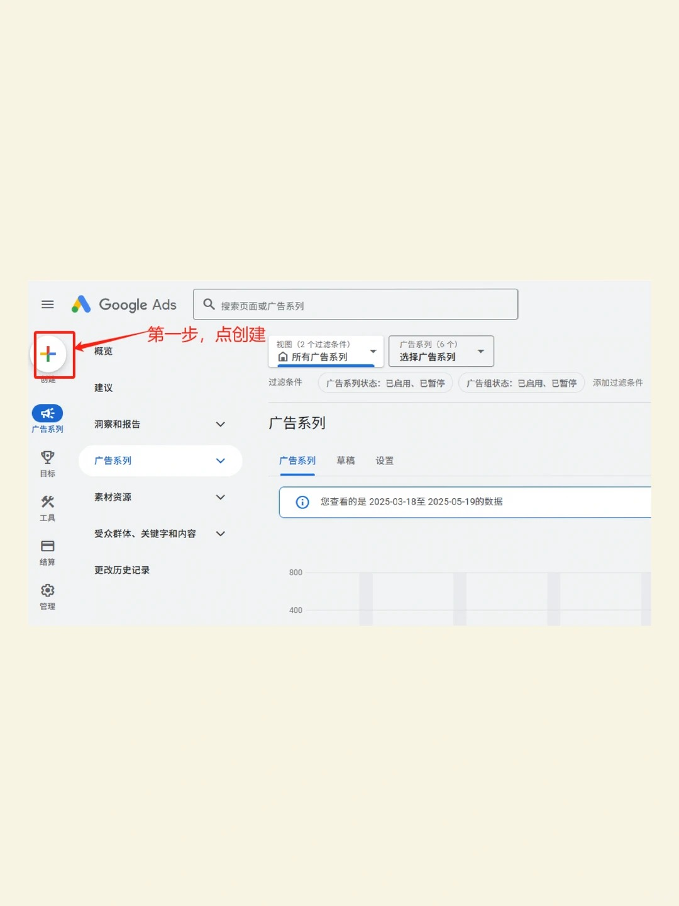
先看懂廣告系列、廣告組和廣告的關係
在廣告系列層面規劃市場、預算與目標，在廣告組層面組織相關關鍵詞和廣告，在廣告層面寫清賣點與行動引導。一個廣告系列可以包含多個廣告組，但每組需要圍繞相近的產品或服務需求。
例如包裝供應商可按“吸塑包裝”“定製包裝”等產品拆分廣告組，各自對應相關關鍵詞、文案和落地頁。不同國家預算、業務時間或產品毛利差異明顯時，可考慮拆分廣告系列，方便判斷投入。
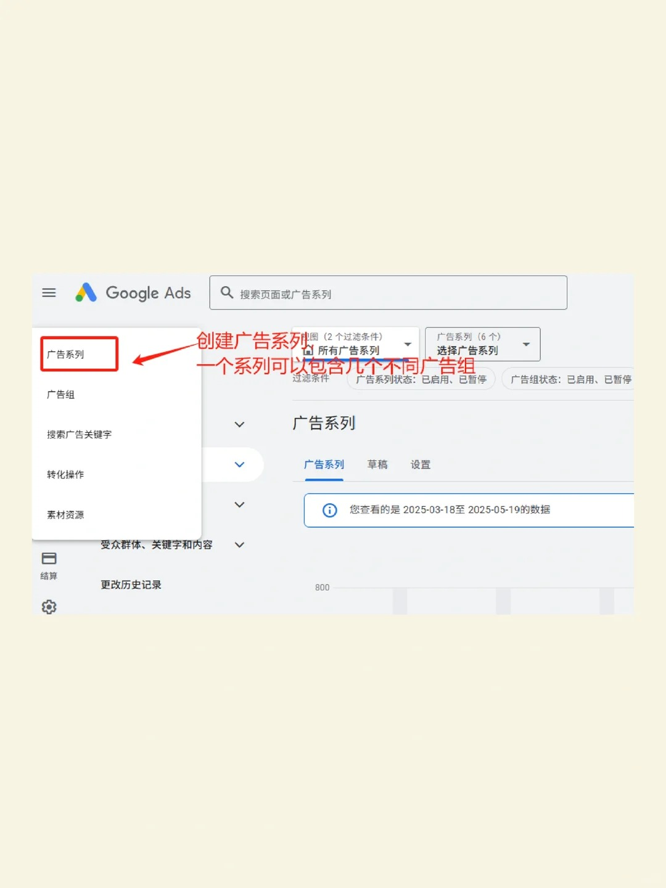
B2B選詢盤目標，電商圍繞購買目標
B2B項目通常關注潛在客戶與有效詢盤；電商項目通常關注銷售、訂單和收入。選擇目標前，先寫下客戶最終要完成的動作，避免只因爲界面推薦就照選。
“網站流量”適合以訪問爲階段性目標的測試，但點擊增加不等於訂單增加。目標選擇也不能代替事件配置：不論選擇銷售還是潛在客戶，都要覈對實際轉化動作及落地頁承接。
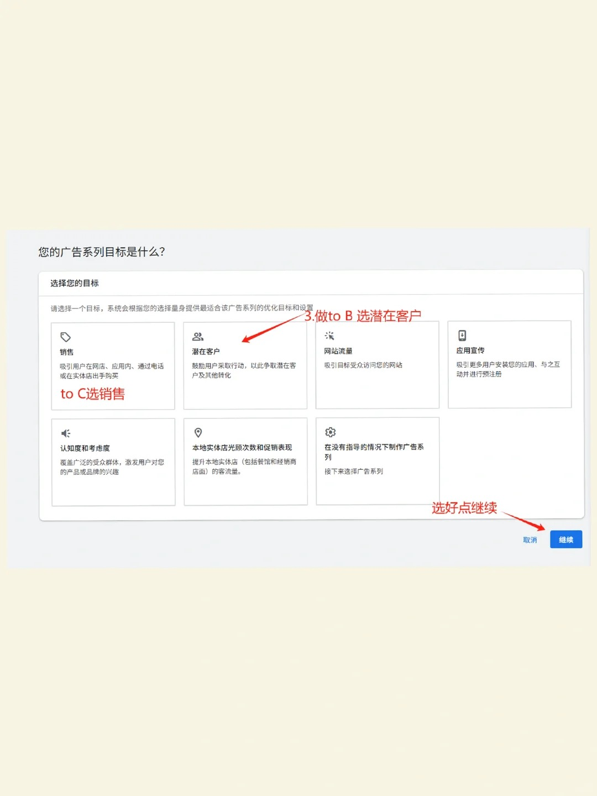
把真實業務動作設置爲轉化
截圖包含“出站點擊”“提交潛在客戶表單”等目標。對B2B項目，成功提交詢盤、完成預約或符合業務定義的諮詢通常比普通頁面瀏覽更接近目標。檢查默認轉化目標中是否混入了與本項目無關的互動動作。
WhatsApp按鈕點擊只能證明用戶點擊了入口，不能直接證明用戶發起對話，更不能證明詢盤有效。可以先將這類點擊作爲輔助指標，再結合實際溝通或可實施的業務回傳判斷質量。
若使用GA4，先確認事件能觸發，再將相關關鍵事件建立爲Google Ads轉化，檢查主要/次要轉化及廣告系列使用的目標。上線前做一次真實測試，排查重複計數和未觸發事件。
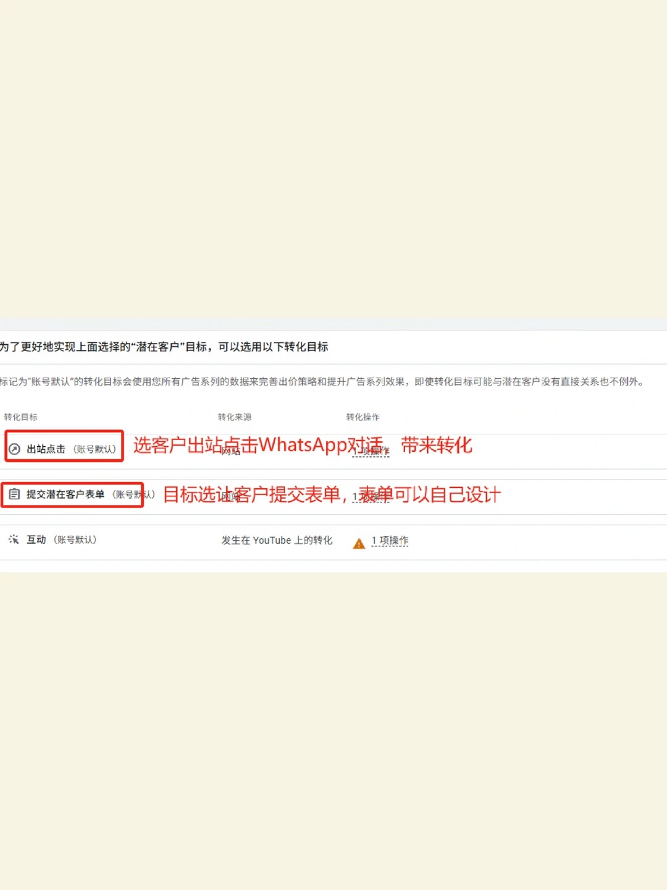
按需求選擇搜索廣告，別隻憑預算選PMax
本文主要演示谷歌搜索廣告：當目標客戶會主動搜索產品或服務時，可以用關鍵詞承接需求，較容易對照搜索詞、文案和落地頁覆盤。
PMax覆蓋多個渠道，選擇時應看轉化質量、素材、業務目標和賬戶條件。“預算不大就選PMax”並非通用結論。需要購物廣告時，還要確認商品數據與Merchant Center條件；搜索、展示、視頻與PMax也不應使用同一套測試預期。
想先比較各類廣告，可查看谷歌廣告類型與代投策略指南。

確認獲客方式，並準備好承接頁面
根據項目選擇網站訪問、來電、潛在客戶表單或其他可用方式。B2B選擇表單相關目標時，要區分自己網站上的表單與Google原生潛客表單；兩者設置、適用條件和數據交接方式不同。
落地頁建議清楚展示產品、適用場景、交付能力和聯繫方法，減少無關跳轉。廣告提出的賣點要能在頁面中找到，表單字段也應與詢盤處理需求對應。
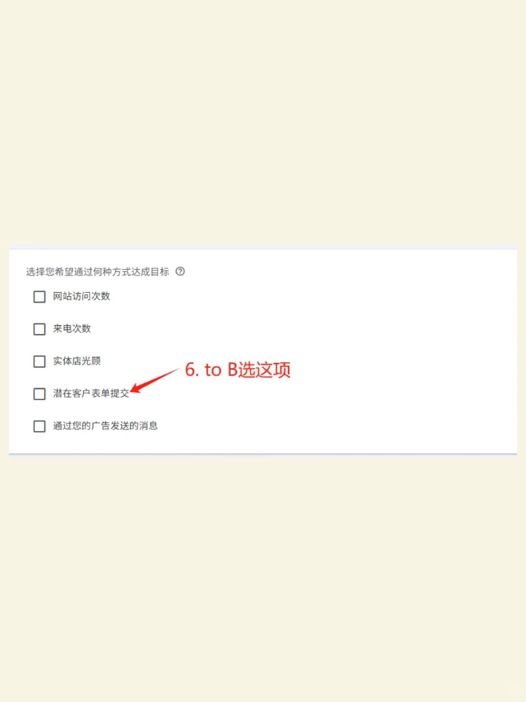
用統一命名規則方便後續管理
名稱不會直接決定廣告效果，但清晰命名可以減少後期看錯數據。建議包含目標市場、產品、廣告類型和目標，例如：US-Packaging-Search-Leads-202610。
同一團隊先統一命名習慣，再建立廣告組和素材版本。素材修改與預算調整可以記錄日期和原因，方便在效果變化時回看執行記錄。
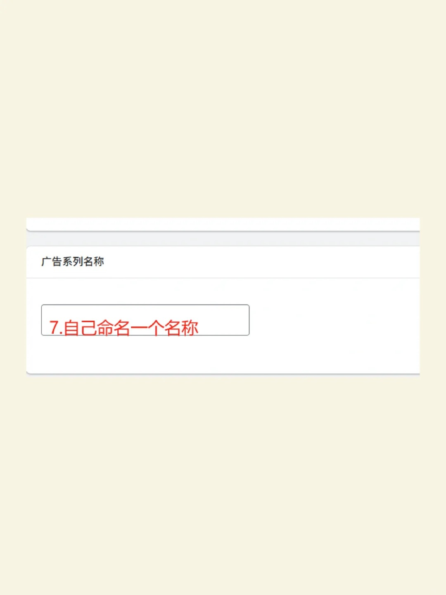
選擇出價策略，覈對新客戶獲取條件
關注詢盤數量時，可評估以轉化次數爲目標的策略；不同轉化價值差異較大時，應先準確記錄價值，再考慮以轉化價值爲目標。目標CPA或ROAS應結合成本、利潤和真實轉化數據設定，不宜隨意填寫一個極低目標。
截圖中的“轉化次數 + 可選目標每次轉化費用”屬於某種界面呈現。Google自2026年6月起調整部分搜索智能出價名稱，不同賬戶看到的名稱可能不同，應以策略行爲和當前提示判斷。
“僅針對新客戶出價”是可選業務策略，不是新賬戶的必選項。是否啓用取決於目標、客戶識別與相應資格；截圖所說的“1000活躍用戶”，在相關官方要求中指特定網絡中的受衆成員條件，不能簡單理解爲網站累計達到1000訪客即可。
Google官方：轉化價值出價與目標設置 · Google官方：新客戶獲取與受衆資格
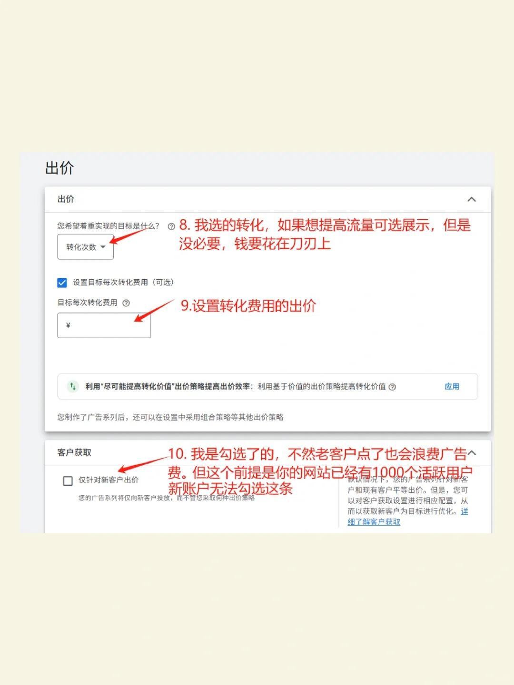
把投放範圍與目標市場對應起來
首次測試可先明確搜索網絡範圍，對搜索合作伙伴等額外流量分別評估，而不是無差別接受全部推薦選項。地理位置按實際可以銷售或服務的國家、地區選擇；“面向全球”並不意味着每個廣告系列都需要選擇所有國家。
查看地理位置的高級選項，確認想覆蓋的是身處目標地區的人，還是對該地區表現出興趣的人。跨境電商與服務項目應根據配送、服務範圍和實際詢盤質量判斷。
截圖中的語言選項可能已變化
Google官方說明，搜索廣告自2026年9月開始調整語言匹配方式，廣告系列級語言設置逐步移除，搜索廣告根據廣告語言進行匹配。若當前界面仍顯示語言選項，按賬戶提示處理；無論字段是否存在，都應讓關鍵詞、廣告文案和落地頁語言對應目標客戶。
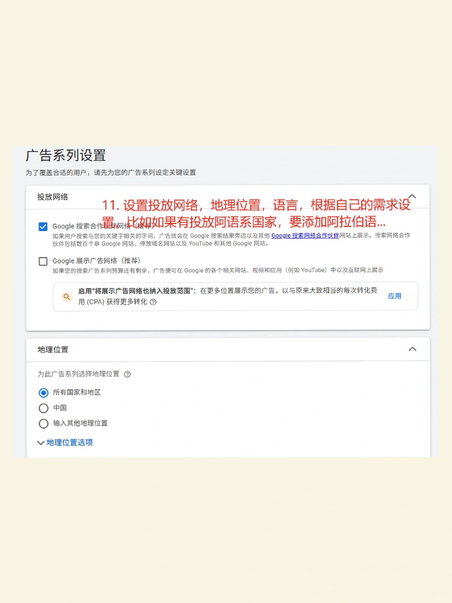
區分“定位”與“觀察”，避免無意縮小流量
在搜索廣告中，“觀察”用於查看指定受衆的表現，不額外限制覆蓋；“定位”則會讓廣告只覆蓋符合受衆條件的人。兩者並不是同一個功能。
如果尚未確認受衆名單是否完整，可以先觀察表現，再按實際數據決定是否限制。不要因爲“精準”兩個字就勾選定位，否則可能把有需求但未入選受衆的人排除。受衆設置仍要與關鍵詞及實際業務目標一起復盤。
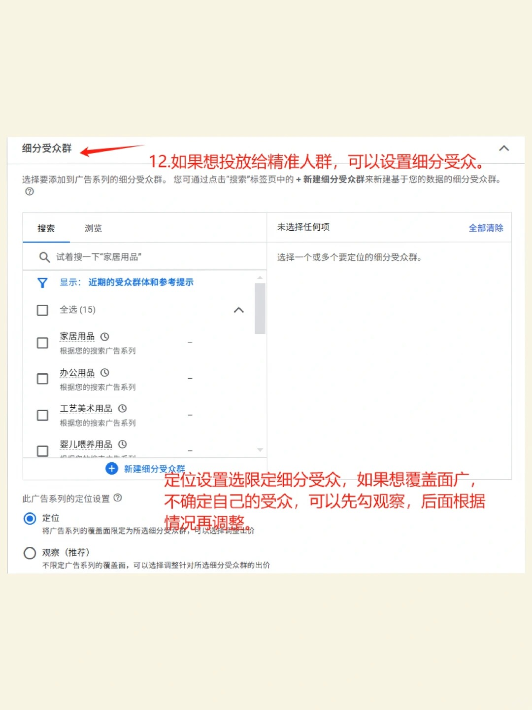
讓每組關鍵詞對應一個產品與落地頁
填寫自己的落地頁或產品信息，可以獲取關鍵詞建議，但建議列表仍需要篩選。優先選擇與目標客戶需求相關、能被當前頁面承接的詞，不要把整行業的泛詞全部塞進同一廣告組。
例如定製包裝業務可以圍繞具體產品、用途和採購意圖組織關鍵詞，再考慮匹配方式。準備否定關鍵詞，並在上線後根據實際搜索詞增補；搜索詞與關鍵詞是兩類數據，不能只看關鍵詞表就判斷全部流量。
賬戶會提供不同的匹配與自動化選項。測試時記錄採用的方式，結合預算、追蹤質量和搜索詞判斷是否需要調整。
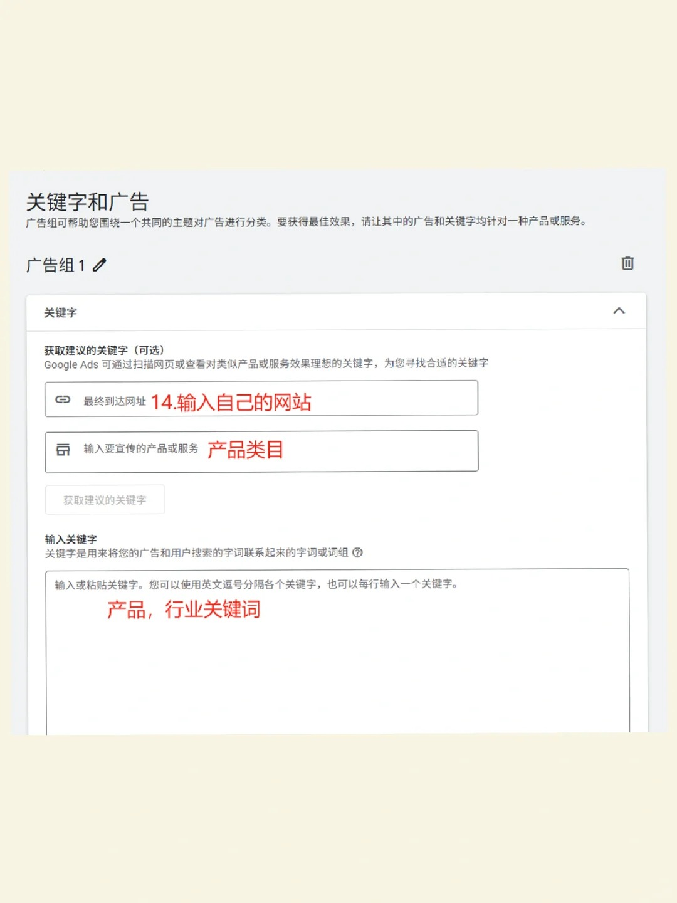
填寫廣告文案、預覽並設置平均每日預算
最終到達網址應指向對應產品或服務頁面。標題和描述分別寫清產品、優勢、可信信息與行動引導，例如“查看產品規格”“獲取定製報價”；不要把無法證實的承諾寫進廣告。
自適應搜索廣告會組合不同標題與描述，各條文案單獨出現或組合出現都應成立。查看手機和桌面預覽，檢查網址、拼寫、內容一致性與所需素材。廣告效力是素材反饋指標，不是獲得轉化的保證。
預算是“平均每日預算”，並非每天絕不超出的固定上限。對多數廣告系列，Google的每日與每月支出限額分別爲平均每日預算的2倍與30.4倍；適用例外及修改預算後的規則以賬戶和官方說明爲準。先設置可承擔的測試投入，再定期覈對實際費用。
提交前複查轉化、地區、網絡、出價、預算、落地頁和結算。廣告提交後仍需審覈，出現限制時按具體提示處理。
Google官方：自適應搜索廣告 · Google官方：平均每日預算
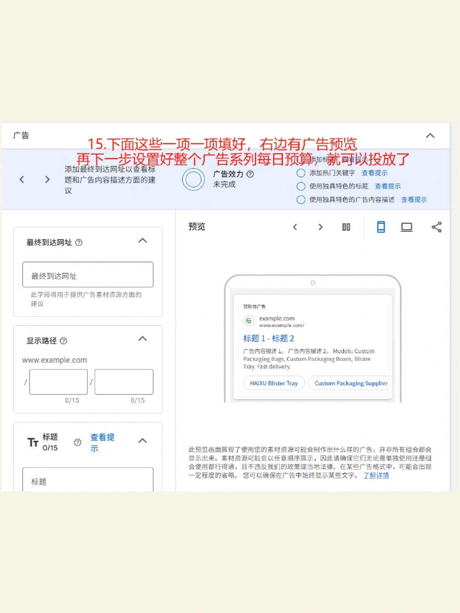
上線後用GA4與Google Ads覆盤有效結果
截圖展示活躍用戶、事件數、新用戶和關鍵事件，可以幫助理解GA4界面。它不是Google Ads廣告轉化報表的完整替代品，也不能單憑增長百分比判斷獲客成本或盈利。
先覈對日期、來源/媒介、廣告系列和事件口徑，再結合Google Ads的點擊、費用、轉化與業務側有效詢盤。GA4關鍵事件與用於Google Ads出價的轉化需要正確配置；不同歸因和統計規則可能使兩個平臺的數據不同。
- 流量不相關：檢查搜索詞、地區、網絡和否定詞。
- 點擊多、詢盤少：檢查落地頁、事件觸發與諮詢承接。
- 詢盤多但質量差：檢查主要轉化定義和業務反饋。
- 花費變化明顯：覈對預算、策略、追蹤及近期修改記錄。
每次調整記錄原因，留出與業務轉化週期相匹配的觀察時間。不要頻繁同時修改所有設置，以免無法判斷哪個變化起作用。
Google官方：GA4關鍵事件 · Google官方：用GA4關鍵事件創建廣告轉化
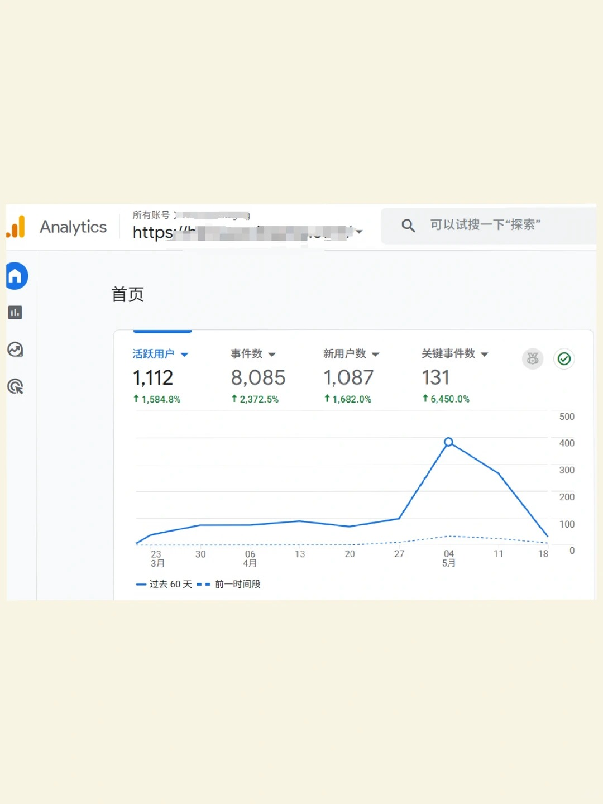
發佈前最後覈對
- 業務目標、主要轉化和預算相互對應。
- 落地頁可訪問、移動端能提交表單。
- 關鍵詞、文案、受衆與目標市場一致。
- 轉化事件已測試，費用與付款方式已確認。
- 明確上線後的數據查看與詢盤反饋安排。
需要先解決賬戶問題，閱讀谷歌Ads開戶高頻問題合集；需要專業執行支持，可查看谷歌廣告代投服務或諮詢項目。